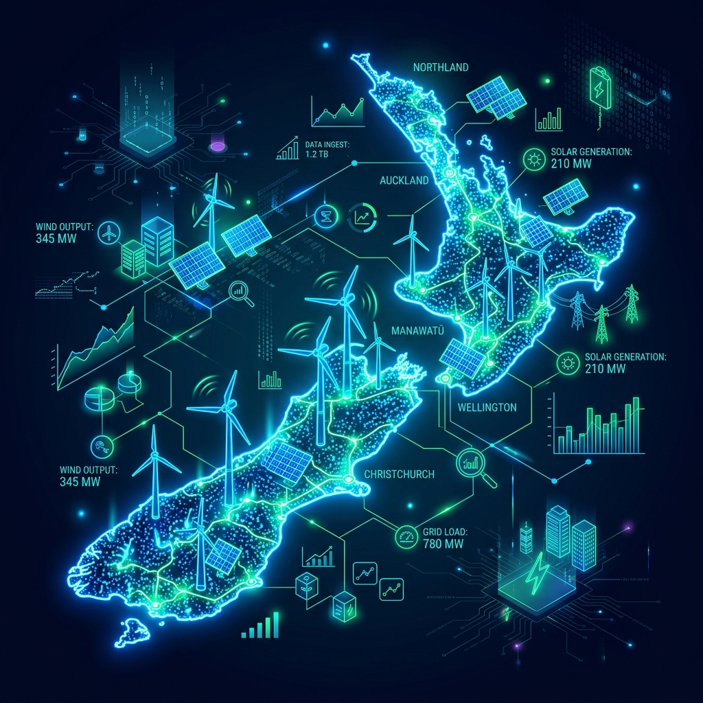

When dealing with critical national infrastructure datasets, such as Energy Systems, privacy and data sovereignty are paramount. Pushing raw dataset files to a public cloud simply to run SQL/AQL queries exposes sensitive grid coordinates to potential interception.
The Podman Solution: By using Podman locally, analysts can spin up an ArangoDB container and mount the local CSV/JSON dataset directly into the container using a volume (`-v /local/data:/data:Z`). The metadata is analyzed entirely within the developer's laptop, ensuring zero data egress to the public internet while retaining the power of an enterprise-grade querying engine.
Below is a sample of initial metadata regarding energy system installations. We can load this into our local ArangoDB instance to map grid resilience and renewable energy output across the North and South islands.
| Installation ID | Region | Type | Capacity (MW) | Status | Commissioned Year |
|---|---|---|---|---|---|
| NZ-WIND-001 | Manawatū-Whanganui | Wind Farm | 119.0 | Active | 2004 |
| NZ-GEO-042 | Waikato | Geothermal | 166.0 | Active | 2014 |
| NZ-HYDRO-012 | Southland | Hydroelectric | 850.0 | Active | 1971 |
| NZ-SOLAR-088 | Canterbury | Solar Grid | 42.5 | Under Construction | 2026 |
To safely import this metadata into your local graph database for analysis, save the data as `nz-energy.json` and use Podman to run the import tool without installing native database clients on your Mac:
Notice the use of host.containers.internal, which allows the ephemeral import container to speak directly to the long-running ArangoDB container on your machine safely.